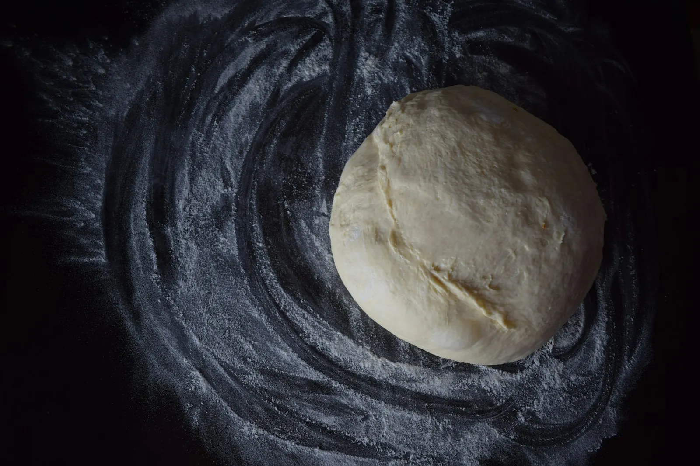

Fabriquées chaque jour
Nos pâtes sont façonnées chaque jour sur place, dans la boutique de la rue République.
Fabriquer des pâtes fraîches, c’est un métier de gestes simples et de patience. Chez Maison Pastier, elles sont préparées chaque jour avec des produits de qualité et un savoir-faire traditionnel.

Contrairement aux pâtes sèches, les pâtes fraîches ne sont pas déshydratées : elles gardent une texture tendre et une surface légèrement rugueuse qui accroche la sauce. Et elles cuisent en quelques minutes.
Nos pâtes sont façonnées chaque jour sur place, dans la boutique de la rue République.
Quelques minutes dans l’eau bouillante suffisent : idéal pour un repas rapide mais soigné.
Des ingrédients de qualité, des sauces maison et des produits du terroir français pour les accompagner.
Six étapes, de la farine à votre assiette. Le métier de fabricant de pâtes fraîches, expliqué simplement.

Tout commence avec très peu de choses : de la farine et des œufs. Comme il y a peu d’ingrédients, chacun compte.

On mélange puis on pétrit jusqu’à obtenir une pâte lisse et élastique. Le repos détend la pâte : elle sera plus facile à étaler et plus tendre à la cuisson.

La pâte passe au laminoir, cran après cran, jusqu’à la finesse voulue : très fine pour les raviolis, un peu plus épaisse pour les tagliatelles.

Découpe des rubans, extrusion des formes courtes comme les rigatoni ou les fusilli : chaque forme demande son outil et son geste.

Pour les raviolis, la farce est déposée sur une feuille de pâte, recouverte d’une seconde, puis chaque pièce est découpée et soudée pour bien garder le cœur.

Les pâtes rejoignent la vitrine le jour même. À vous de jouer : quelques minutes dans l’eau bouillante, et c’est prêt.
Une forme n’est jamais choisie au hasard : rubans, spirales ou tubes ne retiennent pas la sauce de la même façon. Voici les nôtres.
Longs rubans plats, originaires d’Émilie-Romagne.
Des spirales dont le nom vient de « fuso », le fuseau autour duquel on les enroulait.
Gros tubes striés (« rigati ») qui retiennent la sauce dedans comme dehors.
Des pâtes farcies. En Provence, les raviolis à la daube sont une vraie tradition.
Petites quenelles moelleuses, traditionnellement à base de pomme de terre et de farine.
Plongez vos pâtes dans une grande casserole d’eau bouillante salée, puis lancez le minuteur. Les temps sont indicatifs : goûtez toujours avant d’égoutter, et n’hésitez pas à nous demander conseil en boutique.
Comptez environ 1 litre d’eau pour 100 g de pâtes, et une dizaine de grammes de sel par litre, ajoutés à l’ébullition.
En plat principal, comptez environ 120 à 150 g de pâtes fraîches par personne.
L’amidon aide la sauce à napper. Gardez une louche d’eau de cuisson pour lier la sauce si besoin.
Faites chauffer la sauce pendant la cuisson. Un pot de sauce maison est prévu pour deux portions de pâtes.
Les pâtes fraîches se gardent au réfrigérateur et se dégustent rapidement. Demandez-nous la durée exacte en boutique.
Les pâtes fraîches se congèlent bien. Faites-les cuire directement, sans décongélation, en prolongeant un peu la cuisson.
Oui. Nos pâtes fraîches sont façonnées chaque jour sur place, dans notre boutique du 54 rue République à Six-Fours-les-Plages.
Une base toujours disponible : daube de joue de bœuf provençale, mortadelle brousse et pistache, figatelli, épinard brousse, jambon truffe et ricotta. S’y ajoute un ravioli du terroir, inspiré d’un plat français, renouvelé toutes les deux semaines.
Par téléphone au 06 64 97 42 82, ou en composant votre box sur notre page Repas & tarifs puis en nous l’envoyant par SMS. Votre commande est validée une fois confirmée par la boutique.
Nos box sont disponibles le midi. Le service du soir arrive bientôt : suivez-nous sur Instagram pour être prévenus.
Nous sélectionnons des produits issus de producteurs français : rillettes du Sud-Ouest, tartinades, moutardes parfumées (noix, cèpes…), terrines, condiments et douceurs sucrées.
Du mardi au samedi de 8h30 à 13h et de 16h30 à 19h, le dimanche de 8h30 à 13h. Fermé le lundi.